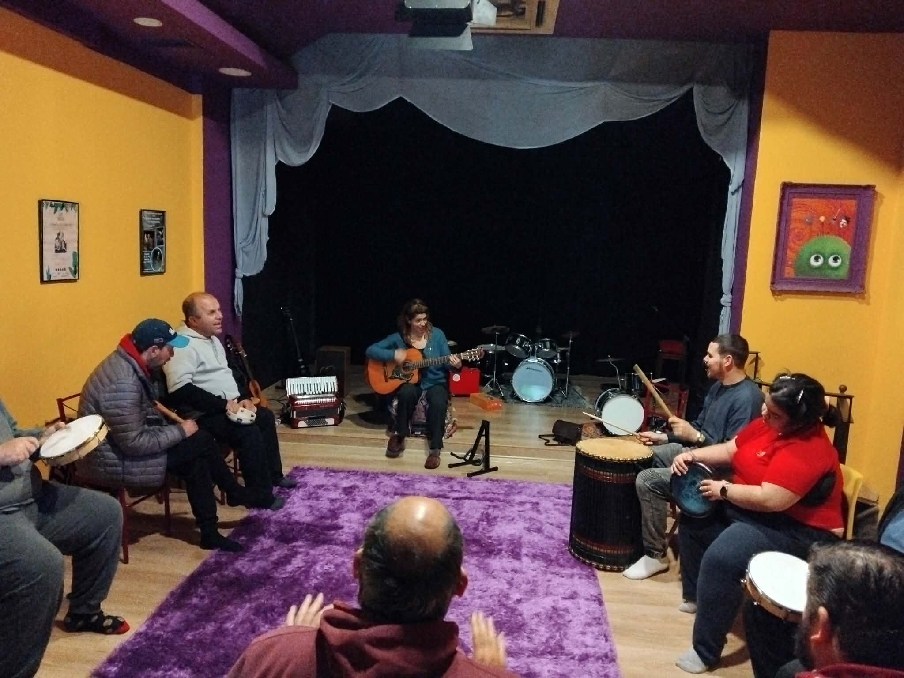
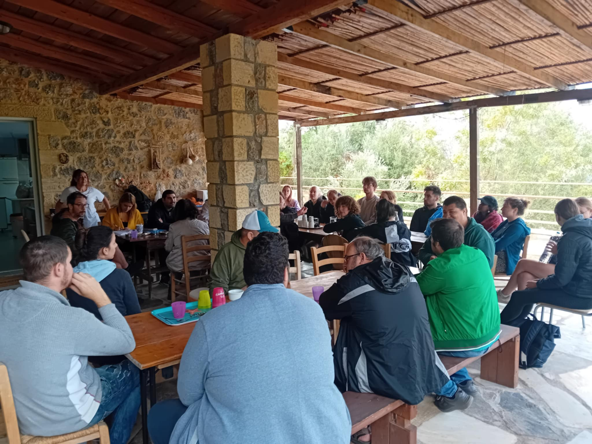
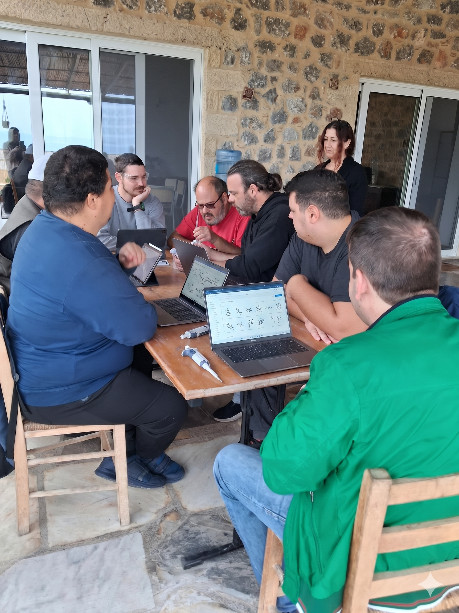
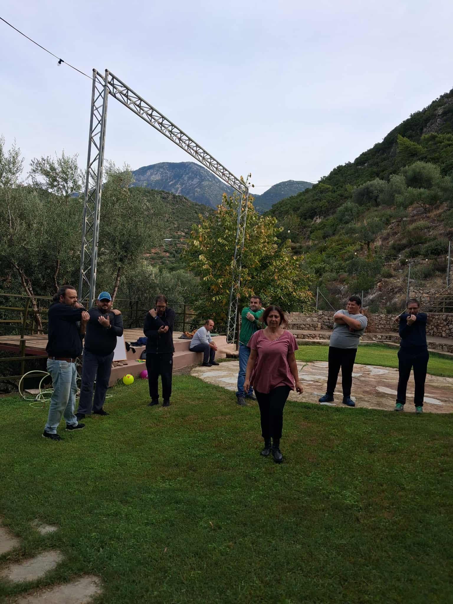
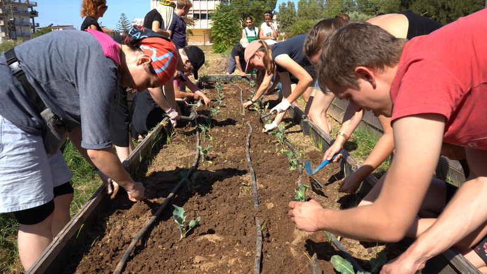

Εξειδικευμένες δράσεις που προάγουν την αυτονομία, την έκφραση και την κοινωνική συμμετοχή.
Κάθε εργαστήριο σχεδιάστηκε με συγκεκριμένους θεραπευτικούς στόχους, εστιάζοντας στη μοναδικότητα κάθε ωφελούμενου. Μέσα από τη χαρά της δημιουργίας, ανθίζουν δυνατότητες που μόνο αγάπη και υπομονή μπορoύν να αναδείξουν.

Στόχος: Λεπτή Κινητικότητα & Έκφραση
Μέσα από την επαφή με τον πηλό, οι ωφελούμενοι αναπτύσσουν τις αισθήσεις τους και εκφράζουν τον εσωτερικό τους κόσμο, δημιουργώντας μοναδικά έργα τέχνης που αντανακλούν τη δική τους ψυχή.

Στόχος: Επικοινωνία & Ρυθμός
Η μουσική αποτελεί παγκόσμια γλώσσα επικοινωνίας. Μέσα από τη ρυθμική αγωγή και το τραγούδι, οι ωφελούμενοι εκφράζουν συναισθήματα που συχνά δεν μπορούν να αποδώσουν με λόγια.

Στόχος: Λειτουργική Αυτονομία
Στοχευμένες δραστηριότητες που βελτιώνουν την καθημερινή λειτουργικότητα και την κατάκτηση βασικών δεξιοτήτων αυτοεξυπηρέτησης, ενισχύοντας την αυτοεκτίμηση και την ανεξαρτησία.

Στόχος: Καθημερινές Δεξιότητες
Εκπαιδεύουμε τους ωφελούμενους στη μαγειρική, την καθαριότητα και τη διαχείριση του προσωπικού τους χώρου, ενισχύοντας την αυτοπεποίθηση και δίνοντας τους τα εφόδια για μια πιο ανεξάρτητη ζωή.

Στόχος: Ψηφιακή Ένταξη
Ασφαλής χρήση υπολογιστών και διαδικτύου. Επικοινωνία μέσω νέων τεχνολογιών και πρόσβαση στην πληροφορία για ψηφιακή ένταξη σε έναν κόσμο που αλλάζει ταχύτατα.

Στόχος: Υγεία & Ευεξία
Προσαρμοσμένα προγράμματα γυμναστικής για ενδυνάμωση, ισορροπία και ευχαρίστηση μέσα από τη σωματική άσκηση. Η κίνηση ως εργαλείο χαράς και υγείας.

Στόχος: Περιβαλλοντική Συνείδηση
Αξιοποιούμε τον κήπο μας για καλλιέργεια λαχανικών και λουλουδιών. Μαθαίνουμε για τον κύκλο της ζωής και τη φροντίδα της γης — ένα μάθημα ζωής που αγγίζει την ψυχή.
Επικοινωνήστε μαζί μας για πληροφορίες σχετικά με τα κριτήρια εγγραφής, τα χρονοδιαγράμματα και τον τρόπο υποβολής αίτησης.
Επικοινωνήστε μαζί μας